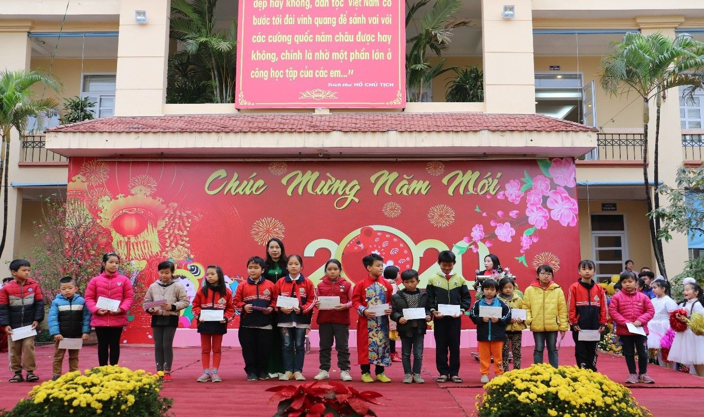
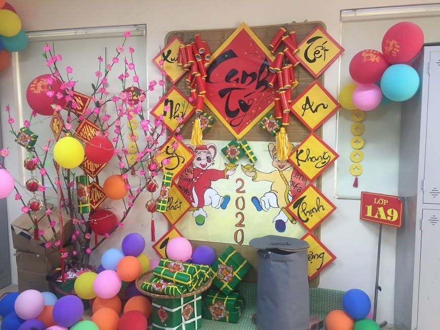
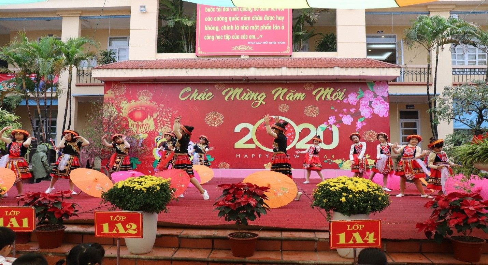
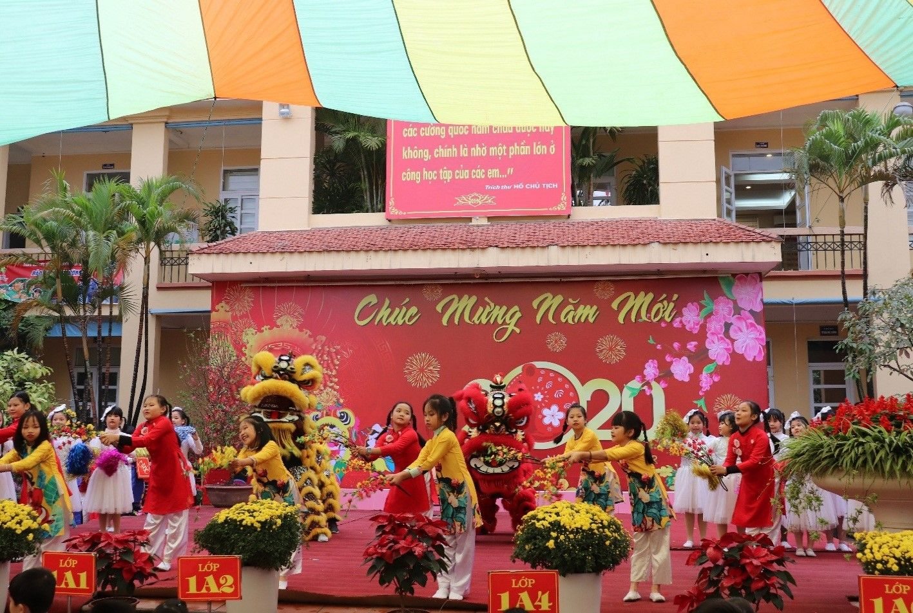
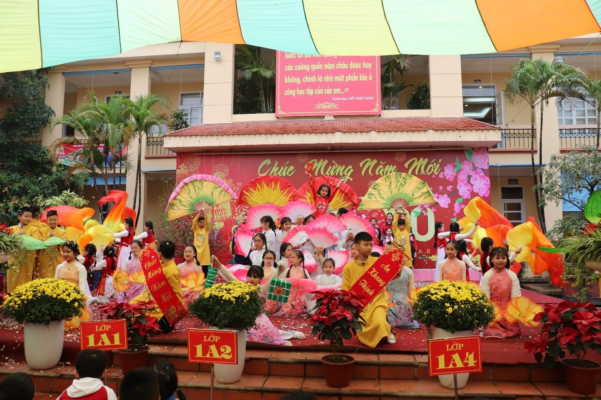

ĐÓN XUÂN CANH TÝ TẠI TRƯỜNG TIỂU HỌC YÊN SỞ
Những ngày này, khi không khí Tết đã đến rất gần với mọi người, mọi nhà, trong hơi thở nồng ấm của những ngày giáp Tết, hòa cùng không khí phấn khởi của cả nước chào đón xuân Canh Tý, sáng ngày 20/01/2020, Trường Tiểu học Yên Sở đã long trọng tổ chức chương trình vui đón Tết Canh Tý 2020.
Đến dự buổi lễ có sự góp mặt của Ban giám hiệu nhà trường, đại diện Hội cha mẹ học sinh của các lớp cùng toàn thể các thầy cô giáo và học sinh trong toàn trường.
Mở đầu chương trình, cô Phạm Thị Thanh Huyền – Tổng phụ trách giới thiệu cho toàn thể các em học sinh trong trường về ý nghĩa và những phong tục tập quán trong ngày Tết Nguyên Đán.
Đặc biệt, nhà trường đã gửi tặng 25 em học sinh có hoàn cảnh khó khăn vươn lên trong học tập, mỗi em học sinh 1 suất quà Tết trị giá 200.000 đồng nhằm động viên các em nhân dịp Tết đến xuân về.

Cô giáo Nguyễn Thị Hồng tặng quà cho các em HS có hoàn cảnh khó khăn
Để chào đón xuân Canh Tý, trường Tiểu học Yên Sở tổ chức rất nhiều các hoạt động như thi trang trí lớp học chào Xuân, thi văn nghệ. Trong phần thi trang trí lớp học, các lớp đã rất tích cực tham gia, đã trang trí lớp học của mình mang không khí Tết cổ truyền tới lớp học với cành đào, cây quất, rất nhiều câu đối, đèn lồng ... tạo cho các em có một không khí phấn khởi học tập chào đón tết về.

Trang trí lớp học mang không khí tết
Bên cạnh đó, một hoạt động cũng thu hút được các thầy cô và các em học sinh tham gia sôi nổi, nhiệt tình và được các bạn học sinh toàn trường háo hức chờ đợi, đó là phần thi văn nghệ Mừng Đảng – Mừng Xuân.

Tiết mục Xuân Tây Bắc do các em học sinh khối 4 biểu diễn

Tiết mục Ngày Tết quê em do các em học sinh khối 3 biểu diễn
Năm phần thi diễn ra mang đến nhiều màu sắc, hương sắc của mùa xuân. Mở đầu là Liên khúc Ngày Tết quê em của các em học sinh khối 3 với những điệu múa khỏe khoắn, vui tươi và màn múa lân vô cùng ấn tượng. Mang đến hương sắc của mùa xuân Tây Bắc đó là các bạn học sinh đến từ khối 4 với liên khúc Xuân Tây Bắc. Những điệu múa uyển chuyển, duyên dáng, các em đã thực sự mang mùa xuân Tấy Bắc đến đây. Phần thi thứ 3 đến từ các em học sinh khối 2, tuy còn nhỏ nhưng các em đã mang đến phần thi của khối mình các tiết mục múa hát vô cùng đặc sắc và đáng yêu mang hơi hướng hiện đại: Liên khúc Hương sắc mùa xuân. Và tiết mục đáng yêu nhất có lẽ đến từ các em học sinh khối 1 với liên khúc Happy New Year. Các em đã mang đến chương trình những bài hát về Tết với phần trình bày vui tươi nhí nhảnh. Kết thúc là liên khúc Chào xuân của các em học sinh khối 5.

Tiết mục Liên khúc Chào xuân do khối 5 biểu diễn
Chương trình Vui đón xuân Canh Tý 2020 là món quà rất ý nghĩa dành tặng các em học sinh nhân dịp Tết đến, xuân về. Qua chương trình, các em có thêm những hiểu biết về phong tục, truyền thống tốt đẹp của nhân dân ta trong dịp Tết Nguyên Đán. Chương trình cũng là một sân chơi bổ ích của các em học sinh, nhằm hình thành cho các em những ước mơ hoài bão của bản thân.